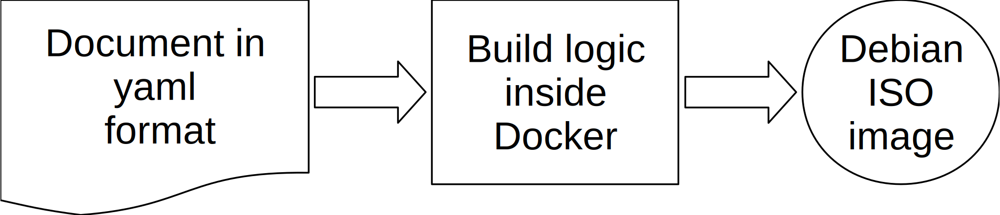

Introduction
This step is only required if you want to build a Debian installation disc - before running the Ansible scripts. It does not install the homebox server software stack.

The disc created does not install the mail server, only the Debian distribution. However, there are two features automatically installed and easily configured: AppArmor and Full Disc Encryption with LUKS. This will protect you both against remote and physical intrusion.
It is also copying your public SSH key onto the installation disc, so you can directly connect to your server securely with your SSH key.
The installer runs with Ansible, as the root user. A flag can be set to completely disable remote root login, and to enforce sudo usage, once the installation is finished.
There are actually three flavours. The first one is a fully encrypted drive with a passphrase; the second one installs on a machine with two drives and software RAID; the last one is using LVM only.
This script can be used both for development with a virtual machine or for production to install the operating system base.
Steps to do
1. Install Docker CE
Docker will only be used to create an automatic installer as an ISO image. You can use this ISO image both at home or with a VPS that supports ISO image installation.
- On Debian: Get Docker CE for Debian.
- On Ubuntu: Get Docker CE for Ubuntu.
If you did not use docker before, you may need to add your user to the docker group, and restart your session. You can do the former using the terminal:
$ sudo adduser bob docker
2. Configure your system
Copy system-example.yml to system.yml, and modify the values accordingly:
cd preseed
cp system-example.yml system.yml
nano system.yml
The file is self-explanatory. A content example is shown below:
system: hostname: mail passphrase: Correct horse battery stapple preseed: luks version: 9.9 arch: amd64 boot_timeout: 5 # In seconds network: domain: example.com iface: auto # or use eth0, ens3, etc... # Country and locales definition country: code: uk timezone: Europe/London locale: id: en_GB language: en country: UK charset: UTF-8 keymap: gb # Repository specific values repo: release: stretch main: ftp.uk.debian.org security: security.debian.org sections: main contrib non-free # Clock parameters clock: utc: true ntp: true # Accounts informations # You can choose a strong password here, root: password: Tr0ub4dor&3 # Debug: As it states debug: true
Tip
If you do not have physical access to your box, don’t worry, you will be able to enter the passphrase remotely over SSH.
3. Set up remote access
The second thing to do is to copy your SSH public key into the folder config/authorized_key. This file will be copied
into the /root/.ssh/authorized_keys by the automatic installer. This setup is absolutely required for Ansible to work.
For instance:
$ cat ~/.ssh/*.pub >config/authorized_key
4. Build the ISO image
You are now ready to build the ISO image, run this command:
cd preseed
./build.sh
This will create the ISO image in /tmp/build-${hostname}/${hostname}-install.iso folder, for instance
/tmp/homebox/homebox-install.iso
5. Boot the system
The whole installation should be automatic, both with LVM and software RAID. For LVM, there is a volume called “reserved” you can remove. This will let you resize the other volumes according to your needs.
If anything goes wrong, use issues on Github project page for support.
Note
The installer has been tested both on a virtual and a physical machine. In the second case, the hardware differences sometimes stops and the installer asks questions. Just answer appropriately, and the installation procedure will continue further. Do not hesitate to send feedback about the questions asked.
Tip
If the installation crashes in the middle, try to disable ACPI, add/or the following boot parameters in the installer:
intel_idle.max_cstate=1
The next step is detailed in the installation section, and is really the installation procedure.
Disk scheme options
Full disk encryption
This is the recommended one. Use preseed: luks. Once installed, the system drive will be fully encrypted with
LUKS.
If you are interested, you can achieve redundancy of the system drive, using a hardware RAID enclosure.
Software RAID
Use preseed: raid. Please, note that if you are using software RAID, the drives won’t be encrypted. There are some
considerations to use file level encryption, but this is not implemented and might not be at all.
LVM only
Use preseed: lvm. No redundancy and no encryption. This is probably not what you want for a live system, but might be
useful for debugging.